Nature beckons everyone. In the hustles of modern day living, one often finds peace in the lap of nature. Be it be, winding down after a tough week’s work or just taking a deviation from routine, a short trip to a tranquil place works wonders for the mind and body. With lush green trees, Nandi hills is home to various kinds of flora and fauna. The hills which are situated at about 60 kilometers from Bangalore is a popular weekend getaway. It untapped beauty attracts many people. The proximity of the hills from the state capital and affordability adds to its advantage. A winding road with 40 curves leads you atop the hill where the vehicles can be parked and one can walk around. The ancient hill fortress is situated in Chikkaballapur taluk of Kolar district of Karnataka and is known by various names. During the Chola period the hills were called Ananda Giri. This means hills of happiness. It is also believed that Yoga Nandeeshwara performed severe penance here. Hence the hills were named after him. Tippu Sultan, one of the greatest kings of India, built a fort here. It was called Nandidurga. The hill resembles a sleeping bull. This is another reason that it is called Nandi hills. It is 4851 feet above sea level.
-
Tippu’s Summer Palace & Fort
The chieftans of Chikkaballapur built a fort in these hills. This was strengthened further by Tipu and he also built a rest house there. This is considered to be Tipu’s Summer Palace.
-
Horse Way
Horse way is a stone doorway in the fort on the North Eastern Side. It is believed that soldiers climbed these walls by standing on horse’s back.
-
Secret Escape Route
There is a secret escape route. It is believed that the king takes this route when the fort is seized.
-
Amruth Sarovar
It is a beautiful lake which is filled with crystal clear water, all year through.
-
Bhramashram
This is a great place for meditation. It is a serene ashram built with natural boulders. It is believed that Sri Ramakrishna meditated here.
-
Gavi Veerabhadra Swamy Temple
There is a natural formation of huge boulders on the hill. This has been transformed into a beautiful temple. This is the Gavi Veerabhadra Swamy Temple.
-
Rivers
Various rivers originated from the hills. Rivers like Pennar, Palar and Arkavathi originated from here. However, most of the sources have now dried up.
-
Yoga Nandeeshwara temple
This temple holds the deity Yoga Nandeeshwara. It displays intricate carvings. This also serves as a Kalyana Mantapa.
-
Tippu Drop
During Tippu’s reign, prisoners were punished from this point. This point in the hill offers a free fall into the valley. The prisoners were dropped to death from here. However, the scenic beauty that this point offers is breath taking.
Famous Visitors
The guest house that Jawaharlal Nehru used to stay is now under the horticulture department. It is called Nehru Nilaya. Earlier it was called Cubbon House as it was built by Lord Cubbon. This is available for the tourists.
The place also has been graced by the presence of The Father of the Nation - Mahatma Gandhi. The place where he stayed is called Gandhi House. This is reserved for the stay of important dignitaries.
It is said that Queen Elizabeth has visited this place. Several other dignitaries and celebrities visit the place. Nandi hills also attract film makers and various motion pictures were shot in this pristine location.
- 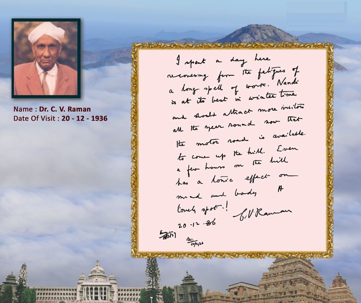
- 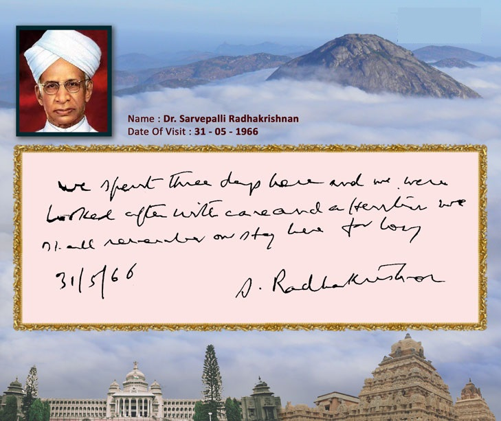
- 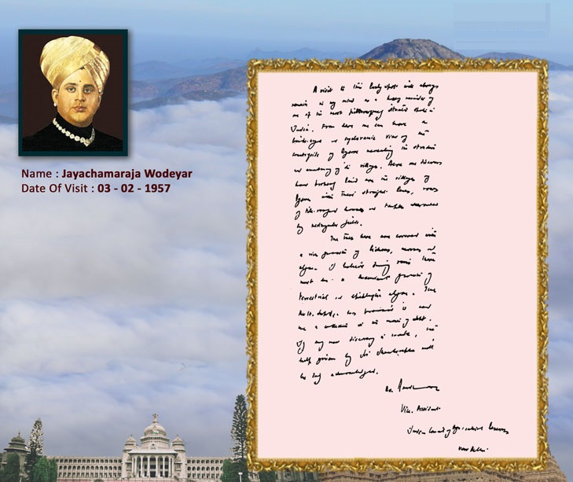
- 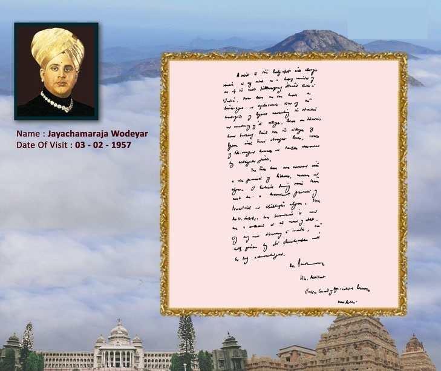
- 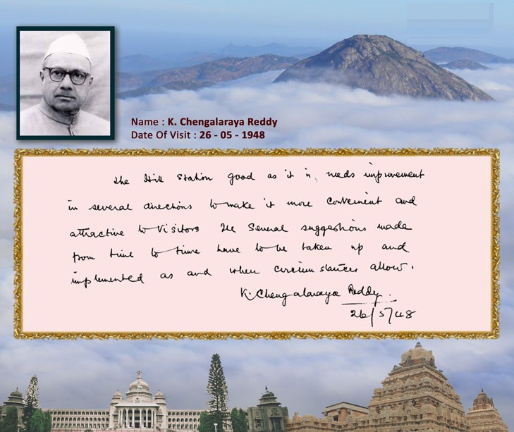
- 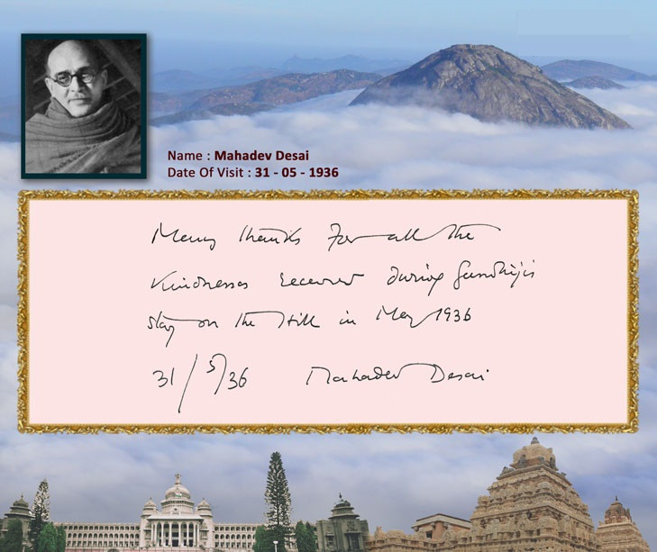
- 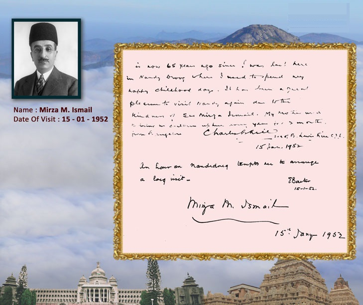
- 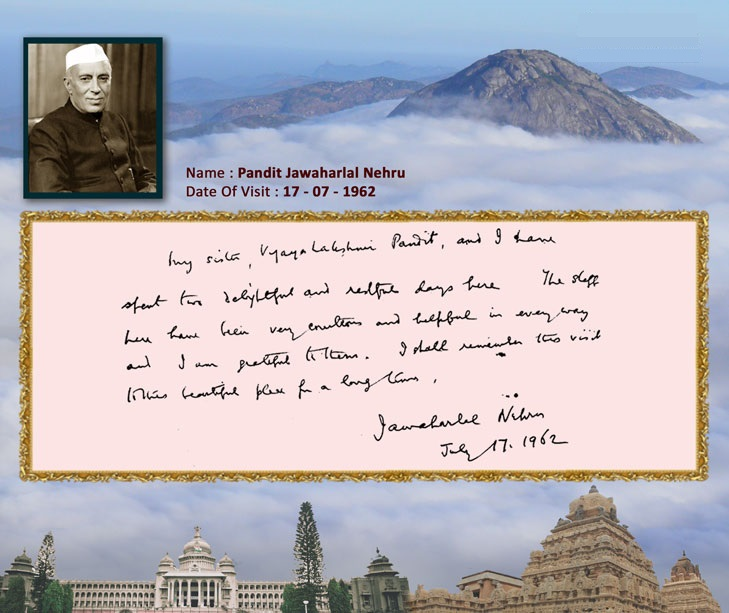
- 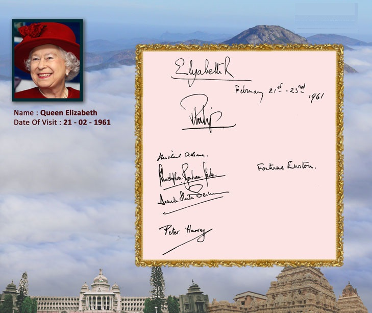
- 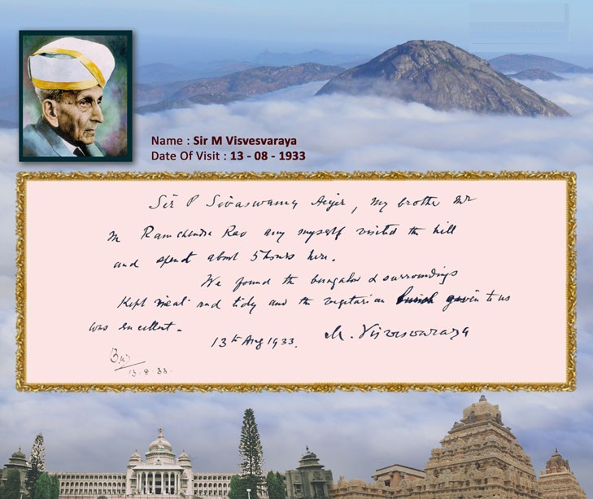
- 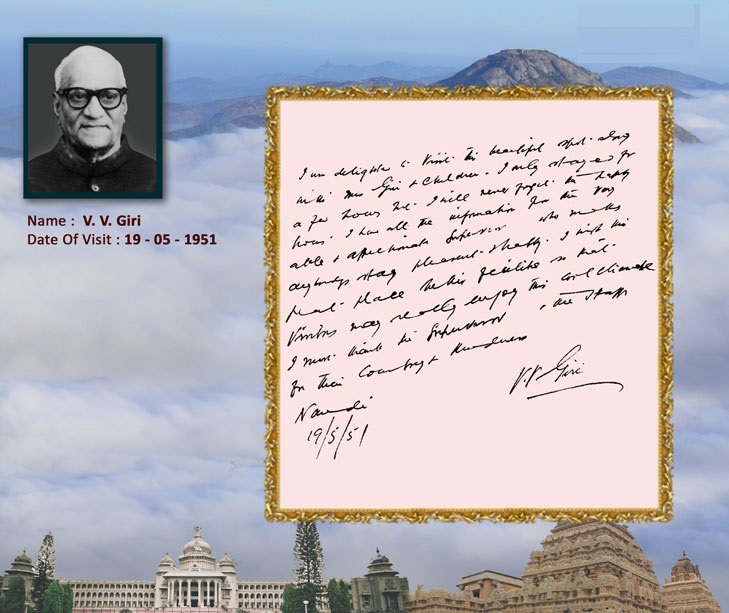